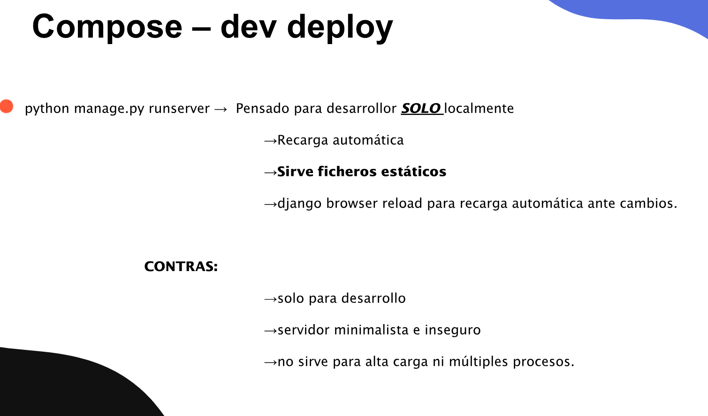

DAPW · Tarea
COMPOSE -- DEV STAGE
Instrucciones
Vamos a dockerizar el blog personal que Laura hizo con Lidia en la asignatura de Backend de segundo de DAW. Utiliza el ZIP de los materiales como punto de partida.
La práctica se desarrolla en tres etapas: un entorno de desarrollo, Prod Stage 1 con Gunicorn y Prod Stage 2 con Nginx. Cada etapa amplía el trabajo de la anterior.
Objetivo de esta etapa
Localiza los componentes de la práctica y reúne lo necesario para integrarlos en un entorno de desarrollo con Docker Compose. El alcance de esta entrega es el de la captura: runserver, recarga automática, servicio de archivos estáticos y django-browser-reload. Gunicorn y Nginx se incorporarán en las siguientes etapas.
Qué debes localizar en el ZIP
manage.pyy el paquetepersonalblog/, con la configuración, las rutas y el punto de entrada WSGI de Django.- Las aplicaciones
aboutme,posts,usersycomments: presentación del blog, publicaciones, usuarios y comentarios. db.sqlite3, las migraciones ymedia/, donde se guardan las imágenes subidas.- Las plantillas, los recursos de
static/y la aplicacióntheme. Tailwind se configura y compila desdetheme/static_src/; el CSS generado está entheme/static/css/dist/. - Las dependencias Python y las herramientas Node/npm. El
Pipfileindica Python 3.13, pero su lista de paquetes está vacía: identifica las dependencias que utiliza el código, como Django,django-tailwind,django-browser-reloady Pillow.
Trabajo a realizar
- Prepara las dependencias y los archivos
Dockerfiley Compose para el entorno de desarrollo. Adapta la ruta de Windows deNPM_BIN_PATHenpersonalblog/settings.pyal ejecutable de npm disponible en el contenedor. - Arranca Django con
python manage.py runserver 0.0.0.0:8000y permite acceder al blog desde el navegador del equipo. - Monta el código para poder editarlo desde el equipo y comprobar la recarga automática. Mantén localizados y disponibles la base de datos SQLite y los archivos de
media/. - Comprueba el servicio de estáticos en desarrollo: CSS, JavaScript e imágenes. Prepara las herramientas de Tailwind de
theme/static_src/para poder recompilar los estilos durante el trabajo. - Integra y comprueba
django-browser-reload. Revisa sus entradas enINSTALLED_APPS,MIDDLEWAREy la ruta__reload__/; ya aparecen en la configuración del proyecto original.
Este entorno se utiliza localmente para desarrollar. runserver no es el servidor que emplearemos en las etapas de producción.

Ver diapositiva 135 ↗
Entrega
Adjunta el enlace al repositorio de GitHub y un README.md con el inventario de componentes, las dependencias identificadas, los pasos de arranque y capturas del blog, de los estáticos y de la recarga funcionando. Este repositorio será la base de las dos siguientes etapas.